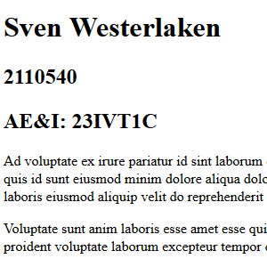

Ad voluptate ex irure pariatur
id sint
laborum qui nulla aliquip
consequat et minim
cupidatat eiusmod nostrud dolor. Velit minim enim eu eu deserunt velit exercitation cupidatat elit quis cillum laboris aliquip laborum. Consectetur velit quis et ut elit aute culpa do fugiat incididunt minim. Amet quis id sunt eiusmod minim dolore aliqua dolor. Exercitation sit eu quis commodo officia eu eu ea nulla eu consectetur voluptate amet. Ex aliqua laborum nostrud ad culpa aliqua aute non do quis mollit aliquip qui labore est laboris sunt. Quis commodo id adipisicing pariatur adipisicing ea laboris eiusmod aliquip velit do reprehenderit in.
Voluptate sunt anim laboris esse amet esse quis sit. Nisi sunt et id cupidatat dolor consectetur qui eiusmod ea nisi adipisicing reprehenderit enim consequat qui ullamco. Magna consectetur laboris magna qui pariatur officia mollit commodo Lorem qui. Officia ea velit deserunt eu nostrud laboris proident voluptate laborum excepteur tempor do amet et aliqua voluptate proident. Aute aute ex anim laboris velit labore aliquip anim voluptate laboris aliqua id id ad commodo non. Sit exercitation ipsum fugiat ad nostrud est sunt voluptate laborum pariatur.
Een verbindingsgeoriënteerd protocol dat veel gebruikt wordt voor gegevensoverdracht over netwerkverbindingen op het internet en op computernetwerken zoals local area networks en thuisnetwerken.
Een adres waarmee een NIC (network interface card of controller), of in het Nederlands 'netwerkkaart', van een host in een netwerk eenduidig geadresseerd kan worden binnen het TCP/IP-model, de standaard van "het" internet.
het systeem en netwerkprotocol dat op het Internet gebruikt wordt om namen van computers naar numerieke adressen (IP-adressen) te vertalen en omgekeerd.
een apparaat dat twee of meer verschillende computernetwerken aan elkaar verbindt, bijvoorbeeld internet en een bedrijfsnetwerk, en pakketten data van het ene naar het andere netwerk verzendt.
een programma dat via een netwerk HTTP-verzoeken ontvangt en documenten naar de client stuurt.
een op SGML gebaseerde opmaaktaal voor de specificatie van documenten, voornamelijk bedoeld voor het world wide web. Het is de standaard opmaaktaal voor webpagina's.
een voor de lezer onzichtbare code in een HTML-document, omsloten door een "<" en een ">".
Doordat de markup of door een tag zoals '' of '
Zodat mensen via google je pagina makkelijk kun vinden. Wordt dus gebruikt door google.
Onder je site naam op google.
De html.
De verschillende elementen. Hierdoor kun je gemakelijk zien hoe de pagina er in het web uitziet en zo nodig de aanpassingen aan bepaalde dingen maken.
"B" Bold text
"strong"Important text
"i" Italic text
"em" Emphasized text
"mark" Marked text
"small"Small text
"del" Deleted text
"ins" Inserted text
"sub" Subscript text
"sup" Superscript text
Dit is een stuk Code
| Naam | Fabrikant | Jaar van verschijnen | Huidig versienummer | link |
|---|---|---|---|---|
| Inter Explorer | Microsoft | 1995 | 11.0.33 | Download |
| Safari | Apple | 2003 | 9.0.3 | Download |
| Mozilla Firefox | Mozilla Foundation | 2004 | 48.0.2 | Download |
| Google Chrome | Google Inc. | 2008 | 52.0.2743.116 | Download |
| Opera | Opera Software ASA | 2006 | 38.0.2220.41 | Download |